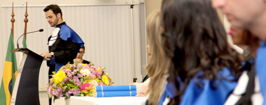

POLÍTICA DE EGRESSOS
São objetivos específicos da Política de Acompanhamento de Egressos:
Manter os registros atualizados de alunos egressos;
Avaliar o desempenho da instituição, através da pesquisa de acompanhamento do desenvolvimento
profissional dos ex-alunos;
Promover o intercâmbio entre ex-alunos;
Promover encontros, cursos de extensão, reciclagens e palestras direcionadas a profissionais formados
pela Instituição;
Condecorar os egressos que se destacam nas atividades profissionais;
Divulgar permanentemente a inserção dos alunos formados no mercado de trabalho;
Divulgação de concursos e ofertas de emprego em sua área de atuação;
Oferecer descontos para a educação continuado dos egressos nos cursos de pós-graduação, extensão e para
realização de um novo curso superior.
A Instituição pretende lidar com as dificuldades de seus egressos e colher informações de mercado
visando formar profissionais cada vez mais qualificados para o exercício de suas atribuições.
Uma base de dados, atualizada constantemente, com todas as informações sobre o acompanhamento do egresso
e o feedback do ensino recebido na sua graduação, possibilita o desenvolvimento das diversas ações. O
ex-aluno recebe periodicamente informes para aperfeiçoamento profissional, como os cursos de extensão,
de especialização e de graduação oferecidos pela UCL. Um outro serviço prestado é a divulgação de
concursos e ofertas de emprego em sua área de atuação.
Essa relação de mão-dupla com o egresso ainda torna possível a aproximação com ex-colegas de turma, a
participação em eventos culturais na UCL e o convite para proferir palestras, formar parte das bancas de
Trabalho de Conclusão de Curso e ministrar oficinas de cursos de curta e média duração.

A Faculdade está sempre de portas abertas para o egresso, que pode continuar a utilizar a biblioteca,
laboratórios e outros serviços prestados pela instituição. O egresso, memória viva do sucesso da UCL,
sempre fará parte da nossa comunidade. O Departamento de Marketing da Faculdade, juntamente com as
coordenações de curso desenvolvem os instrumentos de avaliação que farão parte da política de egressos,
bem como promovem os eventos de integração e de acompanhamento direcionados aos egressos e a comunidade
acadêmica.

PÓS-GRADUAÇÃO
Alunos UCL tem 10% de desconto em todos os cursos de Pós-Graduação. Confira os cursos no Clicando
Aqui!
QUALIFICAÇÃO PROFISSIONAL
Alunos UCL tem de 5 a 25% de desconto nos cursos de Cursos de Qualificação Profissional. Confira
os cursos Clicando Aqui e entre em contato pelo 3434-4100 para identificar o desconto no seu
curso de interesse.
DOWNLOADS
Responsabilidade social com a visão da inclusão digital
Viver é aprender
Um breve panorama sobre o uso de tecnologias empresariais em nosso dia-a-dia
O perfil do Administrador de Empresas exigido pelo mercado de trabalho em tempos de crise.
Práticas sustentáveis de empreendedorismo social
Imposto zero! A cesta básica pede socorro!
Desenvolvimento Organizacional
Cartilha B D I – Bonificação ou benefício e despesas indiretas
Guia do Formando de Engenharia
Guia Comprar e Construir Legal
Guia Acessibilidade
PUBLICAÇÕES
Revista Brasileira de Administração
Revista Tópicus – CREA-ES
DEPOIMENTOS
Curso: Especialização em Engenharia de Segurança do Trabalho
“O curso é uma complementação da minha vida profissional…”
“… é um curso que eu devia ter feito há mais tempo, por causa das necessidades atribuídas à
profissão.”
“É um curso que abre um leque.”
José Francisco Dalvi, Proprietário da empresa Consenge Consultoria LTDA
Curso: Especialização em Engenharia Mecatrônica
“A partir de um esforço conjunto e coordenado pelo Professor Felipe Martins, o curso de
especialização em Engenharia Mecatrônica da UCL complementou-me com as experiências dos docentes
e com as novas metodologias focadas em aplicações reais. Recomendo esse curso a todos os
estudantes de Engenharia que queiram atuar na área de automação e em controle de processos
industriais.”
David de Almeida Fiorillo, Graduado em Engenharia de Automação e Controle.
Curso: MBA – Gestão Integrada em Qualidade e Certificação
“O curso me ajudou a ter uma visão mais holística na parte de gestão de processos para a
qualidade, meio ambiente, segurança do trabalho e, principalmente, na parte de responsabilidade
social que, até então, era um tabu. Isso foi amplamente discutido, esclarecido e exposto, em
termos práticos, de como é implementado e cobrado das empresas.”
Anselmo Follador Junior, IEL-ES/FINDES
Curso: MBA – Gestão da Produção e Manutenção
“Um ponto positivo do curso foi a possibilidade de trocas de informações com pessoas que
trabalham em outras empresas e, principalmente, com os professores…”.
“Com a conclusão do curso, fui transferido para São Paulo, onde continuo aplicando os
conhecimentos obtidos durante o curso da UCL.”
Hely Gama, IMERYS DO BRASIL
Curso: Especialização em Engenharia de Petróleo
“Com o crescimento do mercado na área de petróleo no estado, estou cursando a Pós-graduação para
ampliar a minha empregabilidade.”
Delso Takashi Hirosse, Engenheiro Agrônomo